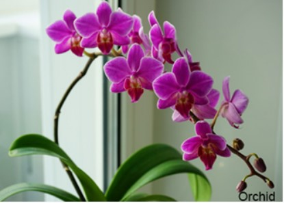

Indoor and Outdoor Plant Dual

As we look to re-establish our connection to nature and bring its
soul-nourishing, relaxing impact into our homes, apartments, and
houses, decorating with plants has grown increasingly trendy in
recent years.
Not only are indoor and outdoor plants a lovely way to bring natural beauty to our living environment, but they also provide several health benefits.
Plants are a great way to improve our entire health, from lowering stress levels to cleansing the air.
So why hold off? Get started greening your area right now to enjoy everything that nature has to offer in abundance.
Not only are indoor and outdoor plants a lovely way to bring natural beauty to our living environment, but they also provide several health benefits.
Plants are a great way to improve our entire health, from lowering stress levels to cleansing the air.
So why hold off? Get started greening your area right now to enjoy everything that nature has to offer in abundance.
Types of Dual Plants :Indoor and Outdoor
Are you concerned that your yard or house receives too much direct
sunlight or too much shade?
You can always rely on a plant, indoors or out, to provide vitality
and vibrancy to your room, no matter how it looks.

Indoor Plants
Aloe
Orchid
Cactus
Spider plant
Snake plant
outdoor Plants
Camellias
Diascia
Coneflower
Rose
Fern
Butterfly Bush
Dual Plants
Vegetable plants (tomatoes,carrots)
Boxwood
Calla lily
Geranium
Mint
Rosemary
Jade plants
The best plants, along with a description, are included in the table below. Feel free to use them in your house or garden.
| ID | Plants Names | Description | price |
|---|---|---|---|
| 1 | Orchid | suitable indoor with high light | 25.12 |
| 2 | cactus | sun-loving suitable indoor with high light | 35.36 |
| 3 | Spider Plant | mixed green and white leaves suitable with low light | 33.15 |
| 4 | coneflower | suitable outdoor and attract more butterflies and birds | 59.22 |
| 5 | Diascia | perfect for gardens or hanging baskets suitable outdoor | 12.29 |